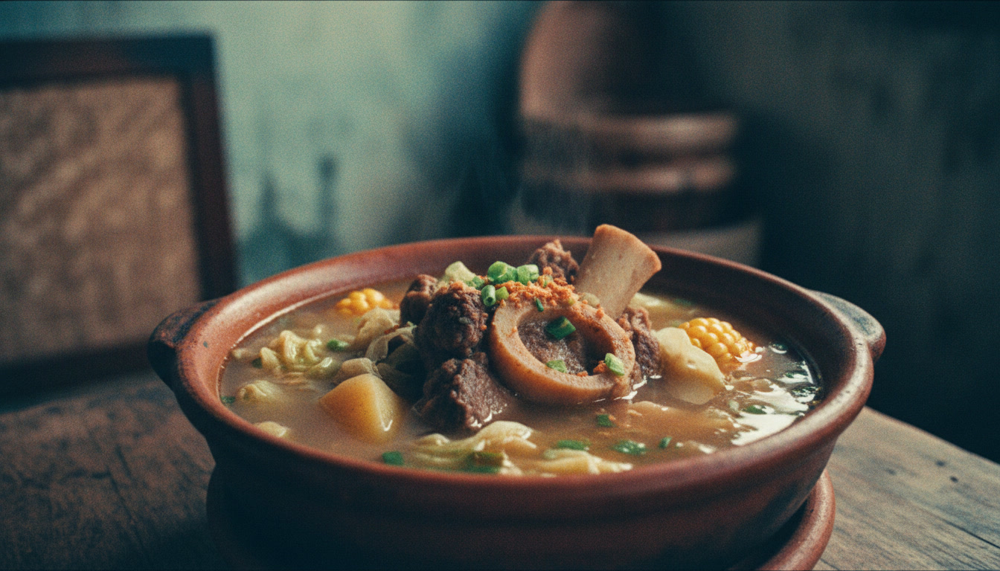

Filipino beef shank soup
It’s a well known fact that Filipinos love stew and soup dishes. From the sour sinigang to the sweet tinola, there’s guaranteed to be a soup dish for every flavor palate preference –– all great to sip and enjoy, especially during long, cool nights. But one of the most popular, and arguably most delicious, soups out there, is the classic Bulalo, or beef shank stew.
Bulalo may only have a few ingredients, but it takes an awful lot of patience to prepare. This is only because you have to wait for the beef to reach optimal tenderness. In this recipe, we let our bulalo sit and boil for about an hour and a half. If you have a pressure cooker it should take less time, but still a while, compared to other dishes. In fact, one and a half hours might still be short compared to other recipes, which let the bulalo simmer for much longer. My Batangas Bulalo recipe recommends a boiling and cooking time of 4 hours! But fear not –– with bulalo, especially when cooked well, the wait is always worth it!
The other ingredients of bulalo are also delicious and nutritious contributions; cabbage, pechay, corn and onions are also typical ingredients in this great dish. You can also choose to add in fish sauce or patis as a substitution for salt.